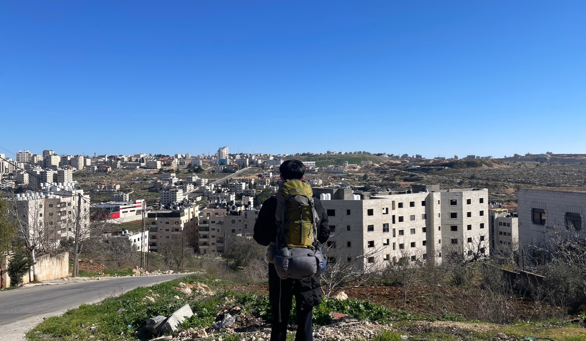
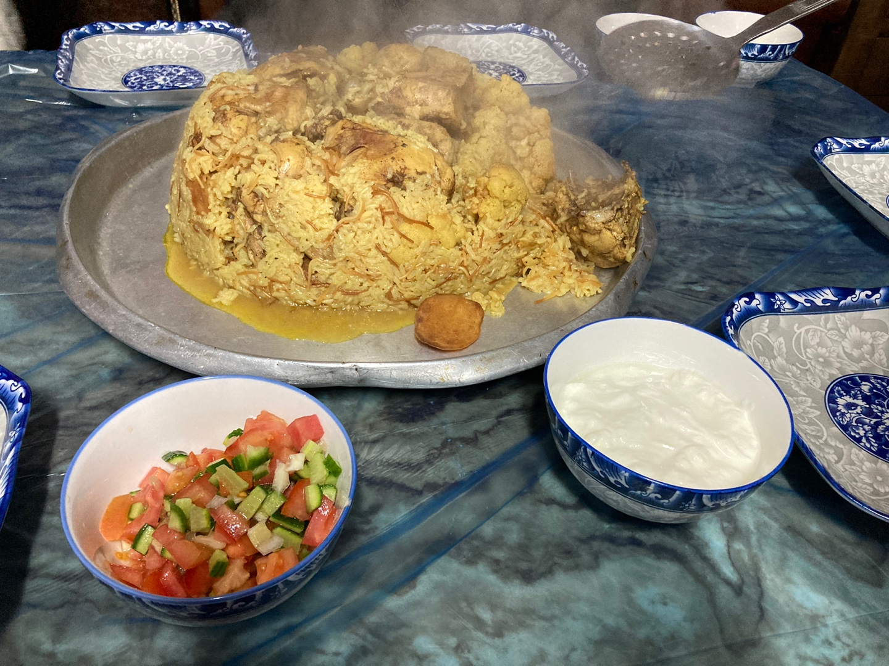
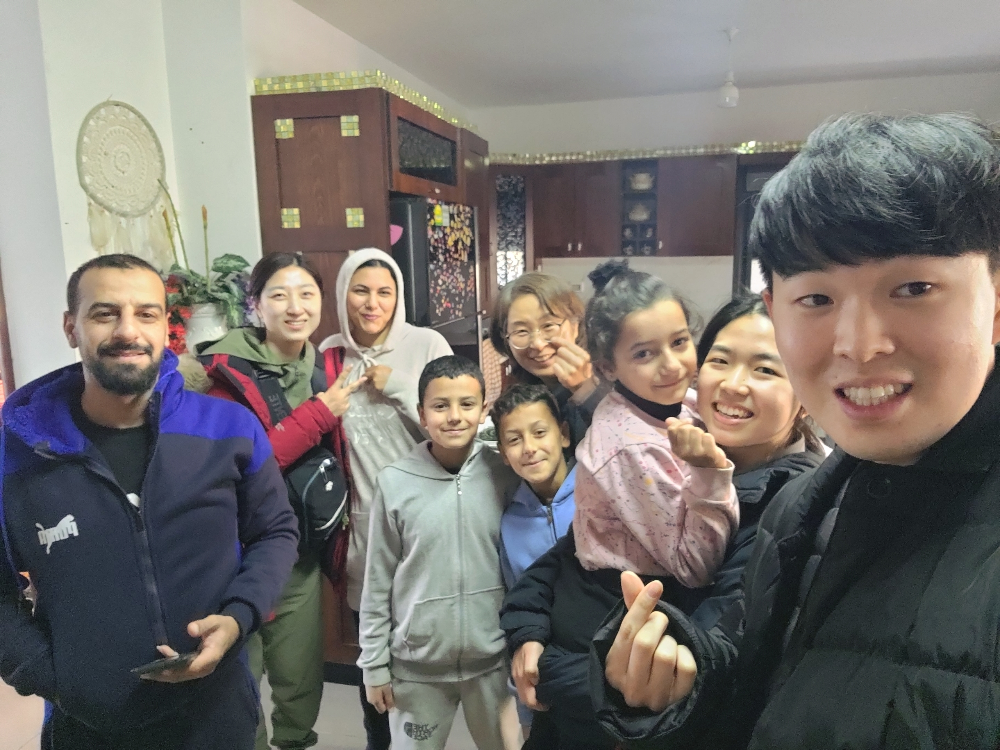
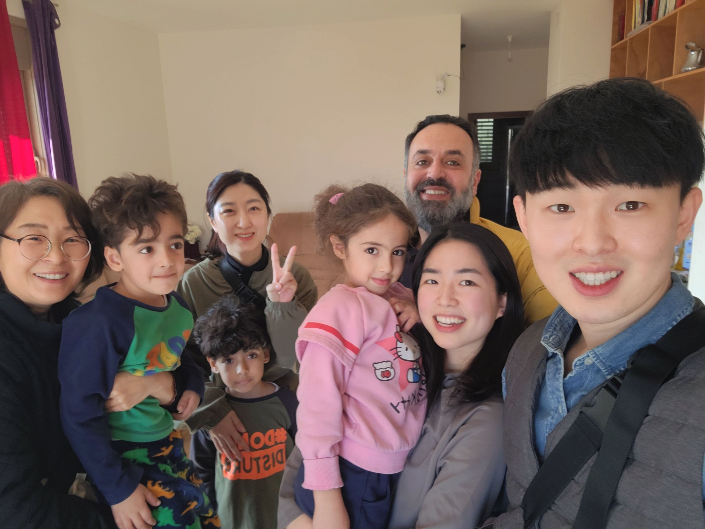
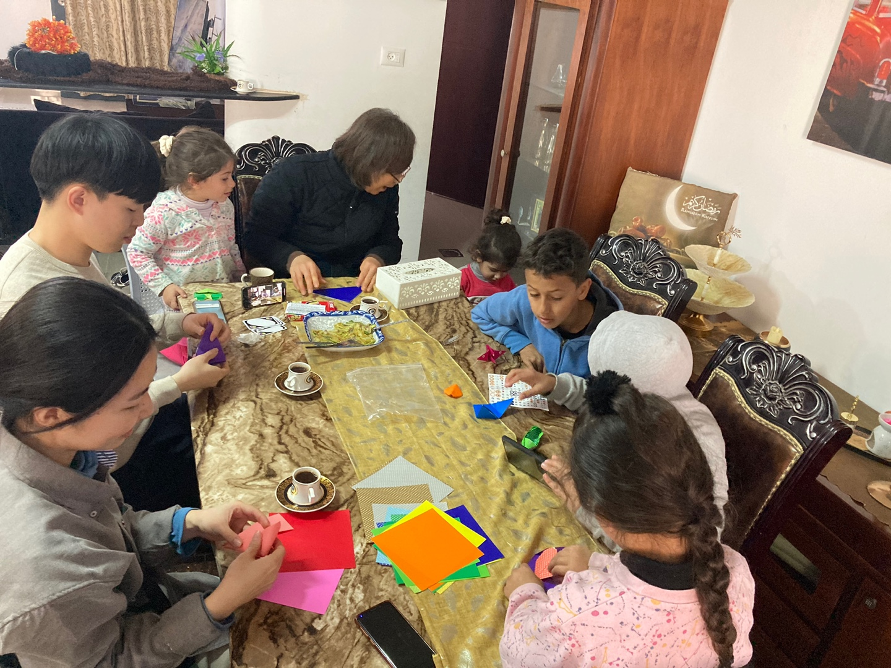
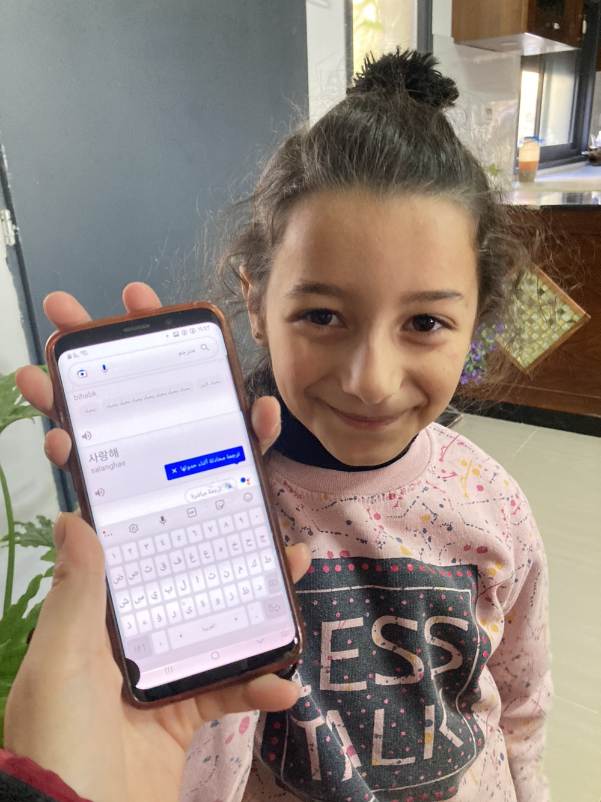

간증
안녕하세요!
함께 기도해주셔서, 팔레스타인 단기선교를 무사히 마치고 국내에 돌아왔습니다. 이번 여정은 특별히 더 큰 기쁨을 누리고, 또 많은 눈물을 흘리게 되었던 여정이었습니다. 기도와 후원으로 단기선교의 여정 가운데 함께해주셔서 정말 감사합니다. 함께하는 마음 가운데, 놀라운 하늘의 축복이 임하게 될 줄 믿습니다.
하나님의 놀라운 역사를 참 많이 경험하여 나누고 싶은 이야기들이 많지만, 글이 너무 길어지기에, 하루의 일만 나누려 합니다(현지인 마을과 이름은 보안을 위해, 약자로 표기함을 이해 부탁드립니다)
 <함께 간 12명의 팀원들>
<함께 간 12명의 팀원들>
먼저 현지에서 하루를 어떻게 보내는지 궁금하실 것 같아 간단히 설명하겠습니다. 비전선교단의 단기선교 방식은 간단합니다. 아침에 팀원들과(4명) 말씀을 보고 기도를 하며 받은 마음을 자유롭게 나누고, 그 말씀과 기도를 의지하여 현지인 마을로 가서 하루를 살아갑니다. 중동에서는 나그네를 초대하는 문화가 있기에, 마을을 지나가기만 해도 하루에 여러 번의 초대를 받아서, 어느 집에서 유해야 할지 선택해야 할 정도입니다. 그렇게 교제하여 친구가 된 이후에, 어느 영혼에게, 누가 복음을 전할지 팀원들과 기도하여 정한 후 개인적으로 복음을 전합니다. 물론 이 모든 과정에서 현지 선교사님의 가이드를 따라서, 마을과 사역방식을 수정하기도 합니다.
어느 아침, 다른 날과 동일하게 말씀을 묵상하고 기도한 후 마음을 나누었습니다. 여호수아 5장을 묵상하며, 우리의 전쟁이 아니라 하나님의 전쟁 가운데 우리가 동참하는 것임을 기억해야 함을, 그리고 그 전쟁을 우리의 시선이 아닌 하나님의 시선으로 바라보라는 마음을 강하게 받아서, 팀원들과 나누었습니다. 개인적인 마음으로는, 오늘 하루의 여정이 육체적으로는 힘들 수도 있겠다고 생각했습니다. 인간적인 시선이 아닌 하나님의 시선을 간구해야 할 정도로 어려운 일들이 있을 수도 있겠다고 염려했기 때문입니다. 하지만 제 생각과는 다르게 하루가 흘러갔습니다.

<마을 바라보는 중>
D마을을 선택하고, 마을 언덕을 오르는 시간가운데 한 팀원이 레몬나무를 보면서 레몬을 먹고싶다고 이야기를 했습니다. 속으로는 "레몬이 무슨 맛이있나.." 했지만, 말로는 "현지인들이 줄 거예요"라고 답하며 언덕을 올라갔습니다. 그런데, 그 말을 한 지 5분도 안 되어 어떤 차가 지나가더니, 아무것도 묻지도 않고 그냥 레몬 4개를 주고 올라가 버렸습니다(이런 일이 하루에도 여러번 발생해 나중에는 놀라지도 않는 제 모습에 안타깝기도 합니다). 그 팀원은 레몬을 까서 맛있게 먹게 되고, 오늘 하루도 하나님의 인도하실 것을 감사함으로 기대하며 마을에 갈 수 있었습니다. 마을에 간 지 얼마 되지 않아, 레몬을 준 형제를 만나게 되고 그 형제가 A형제를 소개시켜주어, A형제가 우리를 본인의 집으로 초대해주었습니다.

<마끄로바 - 볶음밥 위에 치킨인데 정말 맛있습니다>
A형제는 이미 한국인을 만난 적이 있는 특이한 형제였습니다. 그런데, 신기할 만큼 우리들을 너무 환대해주며, 현지인들은 명절에나 먹는 귀한 음식들을 만들어서 우리에게 대접해 주었습니다. 즐겁게 먹고 A 형제의 자녀들과도 놀며 즐거운 시간을 보내기도 하고 A형제와 그 아내 P자매와도 진지한 이야기가 나누어졌습니다. 그러던 중 갑자기 A형제가 놀라운 이야기를 했습니다. "나는 10년 전부터 예수님 꿈을 꾸고 있어, 예수님이 언덕에서 나를 부르는 꿈이 계속 반복돼. 하루에도 여러 번 생각이 나서 힘들어". 놀라운 이야기는 계속되었습니다. "꿈이 반복되던 중에, 한국에서 온 친구들이 예수님을 알려주었어. 한국 친구들이 가고, 몰래 성당을 찾아갔는데, 그곳에서 신부가 나를 유명 TV쇼에 출연시키면서 자기의 돈과 명예를 나를 이용했어. 그곳에는 나쁜 사람들이 참 많아"라고 A형제가 이야기했습니다. 놀라운 마음과, 미안한 마음이 동시에 들어, 대신 사과를 전했는데, A형제가 다시 이야기를 진행했습니다. "성당에 가서 상처받은 이후에도 꿈이 멈춰지지 않아. 그 꿈을 생각만 해도 온 마음이 편해지지만, 나는 이 꿈에서 이제 누가 해방시켜주면 좋겠어". A형제는 무슬림이지만 본인의 삶에서 하나님이 어떻게 역사하고 계시는지 이미 선명하게 느끼고 있어 보였습니다. A형제는 아랍어로 된 성경책을 받아 말씀을 보고 싶어 하며, 이 꿈에 대해서 누군가가 도와주어 자유롭게 해줄 것을 너무나 원한다고 이야기해주었습니다. 우리는 기도해줘도 괜찮은지 물어보고, 함께 축복하며 기도해주는 시간을 가지고, A형제가 원한다고 하여 현장 선교사님을 만나 볼 것을 권유했습니다(보안상 선교사님을 저의 친구로 소개했습니다). A형제는 당장 그 친구를 만나고 싶다고 할 정도로 예수님에 대해서 알고 싶어 했습니다. 우리는 놀란 마음을 진정하고 A형제를 현장 선생님과 연결해드렸습니다.

<잊지못할 A형제의 가정>
다시 복음을 전하는 시간을 가지고, A형제는 궁금한 것을 저에게 물었습니다. 그중 한 가지는 예수님이 하나님이라면, 왜 죽으셨는지에 대한 질문이었습니다. 무슬림 사회에서는 예수님은 하나님이 아니라 선지자 중 한 명이라고 소개하기에, A형제는 예수님의 신성과 그분의 죽으심에 대해서 이해하기 어려웠던 것 같습니다. 이에 대해서, 죄에는 생명의 대가가 필요함을 설명해주고, 나와 너, 우리의 죄를 사하시기 위해 십자가에서 대신 죽으시고, 그분이 하나님이시기에 부활하셨음을 이야기해주었습니다. 놀랍게도 A형제는 진지하게 들으며 제 말에 고개를 끄덕이며 동의를 표했습니다. 할렐루야..! 가지고 있는 이슬람 변증지식 때문에 예수님을 받아들이기 쉽지 않았을 무슬림이라는 배경임에도, A형제는 본인의 삶을 주관하시는 예수그리스도를 인정할 수밖에 없었습니다.
 <지금도 연락중인 A형제>
<지금도 연락중인 A형제>
하나님께서 이미 팔레스타인 땅 가운데 얼마나 역사하고 계시는지 모르겠습니다. 팀원들 모두, 하나님께서 하시는 그분의 일들 앞에서 감사와 찬양을 드리지 않을 수 없었습니다. 이미 그곳에서 하나님께서 그분의 전쟁을 하고 계시고 우리에게 그 승리를 보게 하신 것입니다. 주님은 한 영혼을 구원하시기 위해 오래전부터 이미 그곳에서 그분의 전쟁을 하고 계셨습니다. A형제가 복음을 다시 듣게 되어 예수님으로 인해 자유로워 질 수 있도록, 다시 우리 팀을 그 집에 보내어 주셨습니다. 열방에 나가는 작은 순종 앞에, 우리는 한 것이 없음에도 그분의 전쟁 가운데 동참하는 형언할 수 없는 기쁨을 느끼게 하시고 주님의 영광을 보게 하십니다.

<부유했으나 마음이 가난했던 L형제의 가정>
이와 같은 일들을 여러 번 경험하여 기쁨으로 한국에 돌아오던 중, 몇 시간 동안 눈물이 멈추지 않았습니다. 기쁜 마음 때문이 아니라, 알 수 없는 슬픈 마음이 계속해서 부어졌습니다. 이렇게 오래 지속되는 적은 처음 있는 일이기에, 계속 울다가 이게 무슨 마음인지에 대해서 기도해보았습니다. 기도하며 앞서 나누었던 말씀 묵상에 대해서, 하나님의 전쟁을 하나님의 관점으로 보아야 한다는 묵상이 떠올랐습니다. 그러던 중, 이 슬픈 마음이, 하나님의 외로운 마음이라는 것을 생각나게 하셨습니다. 팔레스타인에, 예수님의 복음과 사랑을 알려줄 자들이 없기에, 주님께서 10년 동안 홀로 A형제의 꿈에 찾아가실 수밖에 없는 그분의 외로운 마음이 이 마음이라는 것을 느끼게 하셨습니다. 흐르는 눈물은 멈추지 않고, 소리를 참는것에 집중할 수밖에 없을 만큼 미어지는 마음이었습니다.
현지인들이 예수님을 꿈에서 계속 만나는 놀라운 일들 앞에서, 기쁨과 감사로만 반응했던 인간적인 마음을 넘어서, 그 안에 외롭게 싸우실 수밖에 없는 주님의 마음이 있었습니다. 누구도 예수님의 사랑을 직접 알려주는 사람이 없어서, 다시 무슬림의 삶으로 돌아갈 수밖에 없었던 A형제와, 그를 바라보는 하나님의 마음은 애통함 그 자체였습니다. 예수님의 사랑을 전해 줄 한 사람이라도 A형제 옆에 머물러 있었다면 주님께서 홀로 10년 동안 꿈에 찾아가시지는 않았을 것 같습니다. 하나님 나라의 전쟁가운데 동참하는 자들이 없기에, 홀로 찾아가실 수밖에 없는 외로운 주님의 마음을 느끼게 하십니다.

<함께 색종이 접으며 교제하는 사진>
헨리나우웬은 인간이 경험하는 가장 고통스러운 상처중 하나는 외로움이라고 말합니다. 그 외로운 마음을 주님도 가지고 계십니다. 하나님 나라를 위한 전쟁 가운데 순종함으로 동참할 자들을 기다리시다 못해, 팔레스타인에서 주님은 외로운 전쟁을 하고 계셨습니다. 어쩌면 주님은 그분의 외로운 마음을 알고 함께 해줄 자들을 원하셔서, 인간에게 외로움이라는 마음을 주신 건 아닐까 싶습니다. 하나님께서 팔레스타인 땅 가운데 놀라운 주님의 역사를 보이고 계십니다. 하지만 그분의 전쟁 가운데 동참하는 자들이 없기에, 외로이 홀로 주님은 전쟁하고 계십니다. 이 마음 앞에 다시 한번 저는 선교사로서의 삶을 결단하게 되었습니다. 부족하지만 그곳에서 전쟁하고 계시는 주님과 함께하려 합니다. 주님의 나라를 위한 그분의 전쟁 가운데, 기도와 후원으로 함께 해주신 모든 분께 정말 감사드립니다. 직접 찾아뵙지 못하고 글로 소식을 전하게 되어 죄송한 마음이 있습니다. 그럼에도, 부탁드립니다. 팔레스타인 땅과, 그 땅을 위한 제 여정 가운데 기도와 마음으로 계속해서 함께해주세요. 이번 단기선교의 시간 가운데 함께해주신 모든 분께 다시 한번 감사의 말씀 드립니다.

<헤어지기 싫어 계속 울던.. A형제의 딸>
 <공동체 이사 기도편지>
<공동체 이사 기도편지>